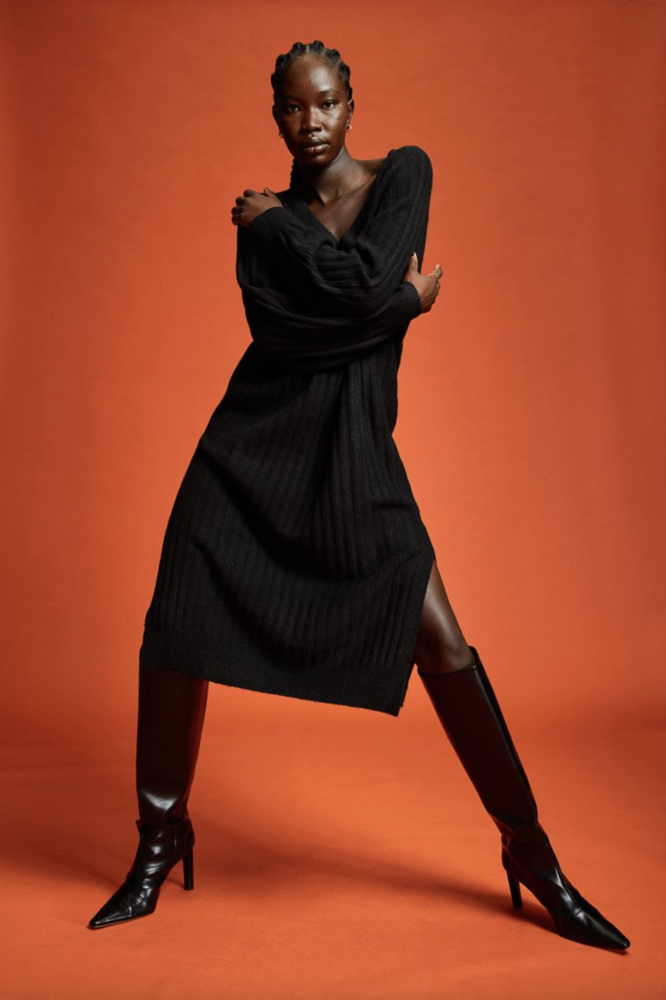
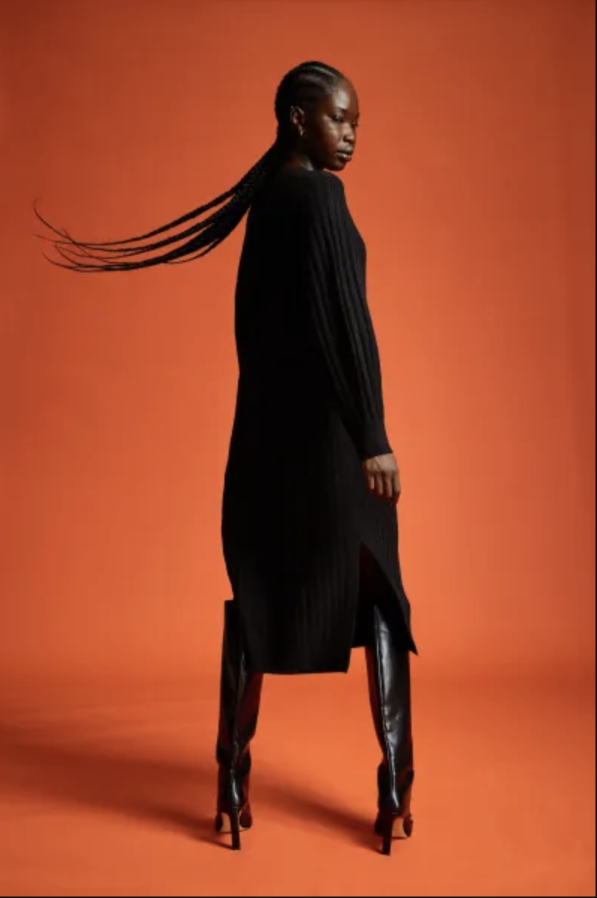
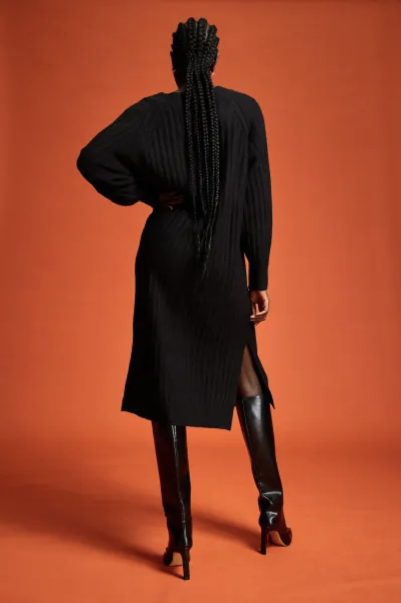
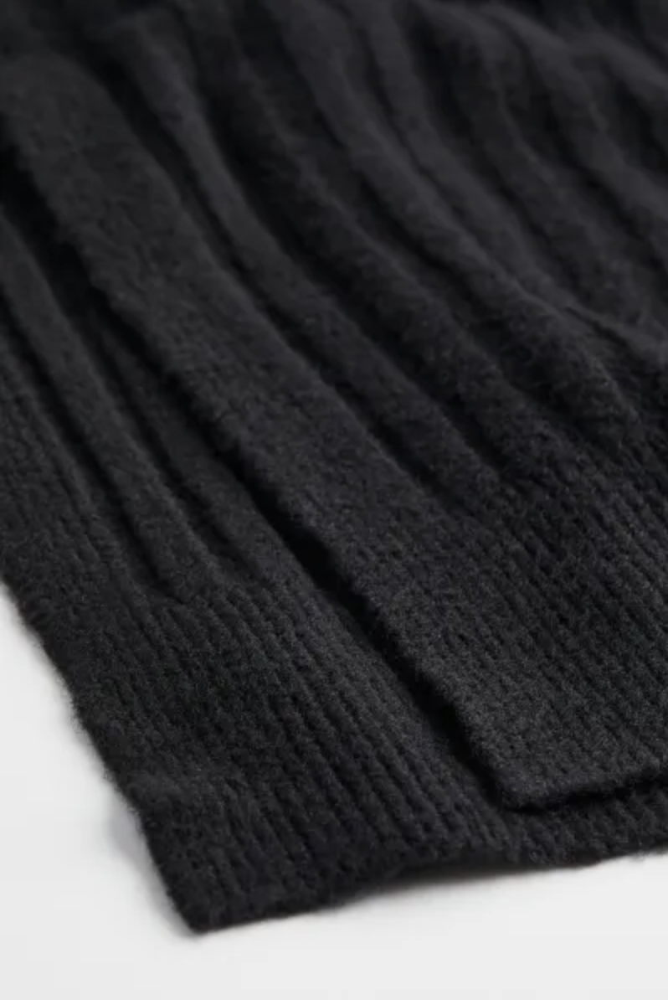
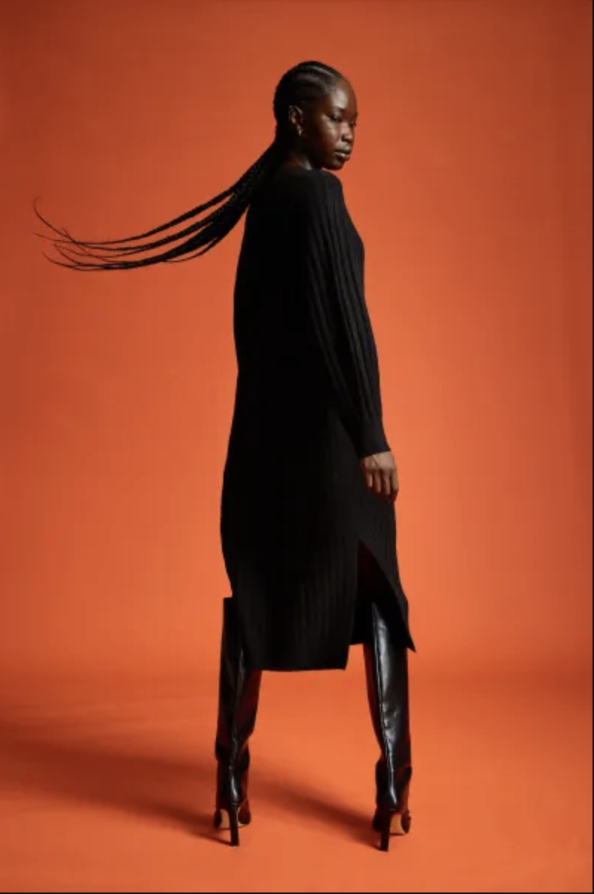
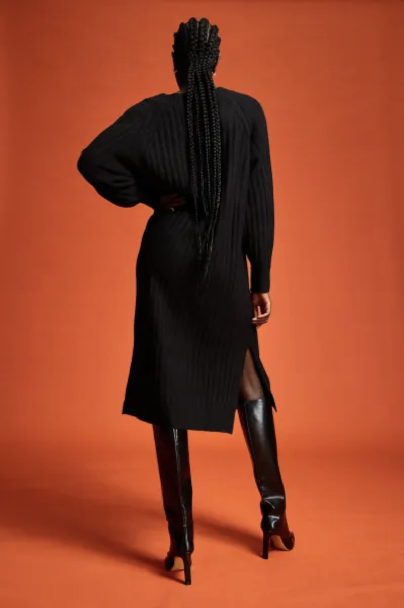
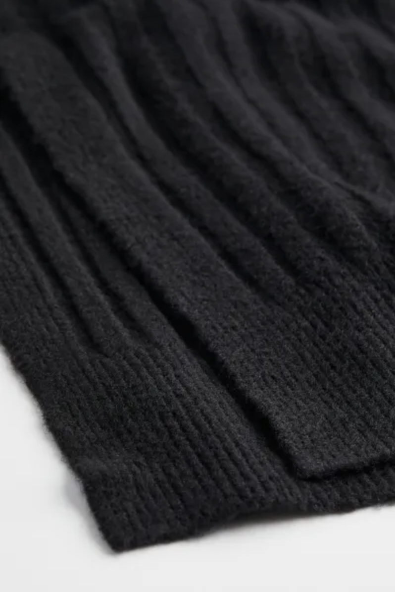

Maat:
Het model is 175cm/5'9" en draagt maat M
Pasvorm:
Relaxed fit
SamenstellingPolyester:
80%, Polyamide 7%, Acryl 7%, Wol 4%, Elastaan 2%
Art. nr:
.1100867002

Hm.com/Dames/Jurken/Midi-jurken/ribgebreide jurk met V-hals
Een midi-jurk van zachte, ribgebreide kwaliteit waarin wol is verwerkt met een relaxte pasvorm. De jurk heeft een V-hals, lange raglanmouwen en een rechte belijning aan de onderkant met zijsplitjes. Geribde boord aan de onderkant en onder aan de mouwen.
Het model is 175cm/5'9" en draagt maat M
Relaxed fit
80%, Polyamide 7%, Acryl 7%, Wol 4%, Elastaan 2%
.1100867002
 





We streven ernaar om in 2030 alleen nog maar gerecyclede, biologische of andere duurzamere materialen te gebruiken.